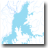
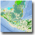
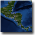
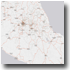

http://ags.servirlabs.net/ArcGIS/rest/services/Mesoamerica
|  |
REST:http://ags.servirlabs.net/ArcGIS/rest/services/Mesoamerica/Basemaps_Hydrology/MapServer
WMS: http://ags.servirlabs.net/ArcGIS/services/Mesoamerica/Basemaps_Hydrology/MapServer/WMSServer
|
|  |
REST:http://ags.servirlabs.net/ArcGIS/rest/services/Mesoamerica/Basemaps_Ecosystems/MapServer
WMS: http://ags.servirlabs.net/ArcGIS/services/Mesoamerica/Basemaps_Ecosystems/MapServer/WMSServer
|
|  |
REST:http://ags.servirlabs.net/ArcGIS/rest/services/Mesoamerica/Basemaps_Infrastructure/MapServer
WMS: http://ags.servirlabs.net/ArcGIS/services/Mesoamerica/Basemaps_Infrastructure/MapServer/WMSServer
|
|  |
REST:http://ags.servirlabs.net/ArcGIS/rest/services/Mesoamerica/Basemaps_Roads/MapServer
WMS: http://ags.servirlabs.net/ArcGIS/services/Mesoamerica/Basemaps_Roads/MapServer/WMSServer
|